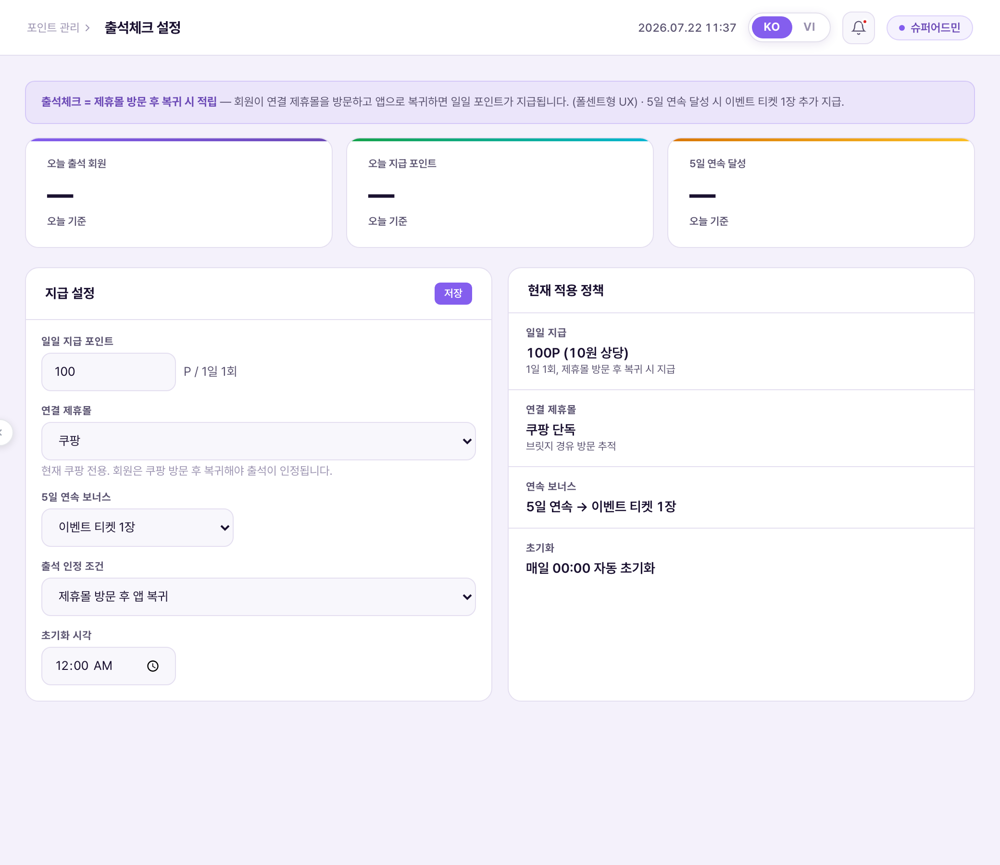

출석체크 설정 = 매일 앱을 거쳐 쿠팡을 구경만 해도 주는 포인트 보상의 규칙을 관리자가 조정하는 화면. 정식 명칭은 "쿠팡 구경 출석체크"이며, 앱에서 "구경하기" 버튼을 눌러 쿠팡에 방문하고 앱으로 복귀하면 일일 포인트가 지급된다(정책서 확정: 100P · 30초 이상 체류 · 하루 1회). 5일 연속으로 참여하면 이벤트 티켓 1장이 추가로 붙는다.Cài đặt điểm danh = màn admin điều chỉnh luật thưởng điểm khi hằng ngày chỉ cần ghé xem Coupang qua app. Tên chính thức là "điểm danh xem Coupang" — trong app, hội viên bấm nút "Xem ngay" để vào Coupang rồi quay lại app thì được cấp điểm trong ngày (chính sách đã chốt: 100P · lưu lại tối thiểu 30 giây · 1 lần/ngày). Nếu tham gia đủ 5 ngày liên tiếp sẽ được cộng thêm 1 vé sự kiện.

| 요소Thành phần | 의미Ý nghĩa | 바꾸면 생기는 일Điều gì xảy ra khi thay đổi |
|---|---|---|
| 일일 지급 포인트Điểm cấp hằng ngày | 출석 1회 인정 시 지급하는 포인트(현재 100P, 1일 1회)Điểm cấp khi 1 lần điểm danh được công nhận (hiện 100P, 1 lần/ngày) | 저장 즉시 다음 출석부터 새 값 적용. 이미 지급된 과거 레코드는 소급 변경되지 않음Lưu là áp dụng ngay cho lần điểm danh tiếp theo. Các dòng đã cấp trong quá khứ không bị thay đổi hồi tố |
| 연결 제휴몰Đối tác liên kết | 출석 인정을 위해 방문해야 하는 몰(현재 쿠팡 단독)Sàn cần ghé thăm để được công nhận điểm danh (hiện chỉ Coupang) | 1단계는 쿠팡 전용으로 정책 확정(정책서 근거). 다른 몰로 바꾸면 브릿지·추적 연동이 먼저 구축돼 있어야 함Giai đoạn 1 đã chốt chỉ dùng Coupang (căn cứ chính sách). Đổi sang sàn khác cần có bridge·tracking được xây trước |
| 5일 연속 보너스Thưởng 5 ngày liên tiếp | 5일차 달성 시 추가로 주는 보상 유형(보너스 포인트 / 이벤트티켓 1장 / 이벤트티켓 2장 중 선택)Loại thưởng thêm khi đạt ngày thứ 5 (chọn 1 trong: điểm thưởng / 1 vé sự kiện / 2 vé sự kiện) | 정책서 SoT는 "이벤트 티켓 1장"으로 확정(별도의 500P 보너스는 없음). 드롭다운에서 다른 값으로 바꾸면 정책서와 어긋나므로 임의 변경 금지SoT chính sách đã chốt "1 vé sự kiện" (không có thưởng 500P riêng). Đổi sang giá trị khác trong dropdown sẽ lệch với chính sách nên cấm tự ý đổi |
| 출석 인정 조건Điều kiện công nhận điểm danh | "제휴몰 방문 후 앱 복귀" 또는 "앱 진입만으로 인정" 중 선택Chọn "ghé đối tác rồi quay lại app" hoặc "chỉ cần mở app là công nhận" | "앱 진입만으로 인정"으로 바꾸면 실제 방문 검증 없이 출석이 인정돼 어뷰징 위험이 커짐 — 정책서의 "30초 체류 확인" 원칙과 정면으로 배치되므로 신중히 다룰 것Đổi sang "chỉ cần mở app" sẽ công nhận điểm danh mà không xác minh ghé thăm thực, tăng rủi ro gian lận — trái ngược nguyên tắc "xác nhận lưu lại 30 giây" của chính sách nên phải hết sức thận trọng |
| 초기화 시각Giờ reset | 하루의 경계를 정하는 시각(현재 00:00)Giờ xác định ranh giới một ngày (hiện 00:00) | 자정이 아닌 값으로 바꾸면 "하루"의 기준이 통상 감각과 달라져 "왜 오늘 출석이 아직도 안 눌러지냐"는 CS 문의가 늘 수 있음Đổi khác 0 giờ sẽ làm khái niệm "một ngày" lệch cảm nhận thông thường, dễ tăng thắc mắc CS kiểu "sao vẫn chưa điểm danh được hôm nay" |
마스터 정책서는 출석 인정 조건으로 "30초 이상 체류"를 명시하지만, CMS 화면의 "출석 인정 조건" 드롭다운에는 체류 시간을 초 단위로 입력하는 필드가 없다(방문 후 복귀 / 앱 진입만 두 가지 옵션만 존재). 즉 30초 기준은 화면에 노출되지 않는 서버 내부 고정값으로 추정된다 — 확정 대기(실제 코드·서버 설정 확인 필요).Tài liệu chính sách gốc ghi rõ điều kiện công nhận là "lưu lại từ 30 giây trở lên", nhưng dropdown "điều kiện công nhận điểm danh" trên CMS không có ô nhập thời gian lưu lại tính bằng giây (chỉ có 2 lựa chọn: ghé rồi quay lại / chỉ cần mở app). Suy đoán ngưỡng 30 giây là giá trị cố định phía server không hiển thị trên màn hình — đang chờ xác nhận (cần kiểm tra code·cấu hình server thực tế).
연속 일수 표시는 롤링(직전 7일 기준) 방식으로 확정돼 있다 — 월~일 고정 달력이 아니라 오늘 기준 거꾸로 7칸을 보여주며, 중간에 하루라도 빠지면 연속 카운트가 리셋되고 다음 참여일이 다시 1일차가 된다(DEVQA 확정 반영 근거). 이 리셋·롤링 로직 자체는 이 설정 화면에 노출된 항목이 아니라 서버 로직이다.Cách hiển thị số ngày liên tiếp đã chốt theo kiểu rolling (7 ngày gần nhất) — không phải lịch cố định Thứ 2~Chủ nhật mà hiển thị 7 ô lùi từ hôm nay, chỉ cần bỏ lỡ 1 ngày là đếm liên tiếp reset và ngày tham gia kế tiếp lại tính là ngày 1 (căn cứ DEVQA đã chốt). Logic reset·rolling này không phải mục hiển thị trên màn cài đặt mà là logic phía server.
| 상황Tình huống | 운영자가 하는 일Việc Vận hành viên làm | 결과Kết quả |
|---|---|---|
| 출석 이벤트 프로모션Khuyến mãi sự kiện điểm danh | 일일 지급 포인트를 한시적으로 상향(예: 100P→200P) 후 저장Tăng tạm thời điểm cấp hằng ngày (VD: 100P→200P) rồi lưu | 저장 시점 이후 출석부터 새 금액 적용. 이벤트 종료 후 반드시 원래 값으로 복귀시켜야 함(자동 원복 기능 없음, 확정 대기)Áp dụng từ lần điểm danh sau thời điểm lưu. Kết thúc sự kiện phải tự tay chỉnh lại giá trị gốc (chưa có tính năng tự khôi phục, đang chờ xác nhận) |
| 쿠팡 브릿지 장애Sự cố bridge Coupang | 방문 추적이 일시적으로 안 될 때, 인정 조건을 "앱 진입만으로 인정"으로 임시 전환 검토Khi tracking tạm thời lỗi, cân nhắc chuyển tạm điều kiện sang "chỉ cần mở app" | 서비스 중단은 막지만 어뷰징 위험이 커지므로, 장애 복구 즉시 원래 조건으로 되돌려야 함Tránh gián đoạn dịch vụ nhưng tăng rủi ro gian lận, nên phải trả về điều kiện gốc ngay khi khắc phục xong sự cố |